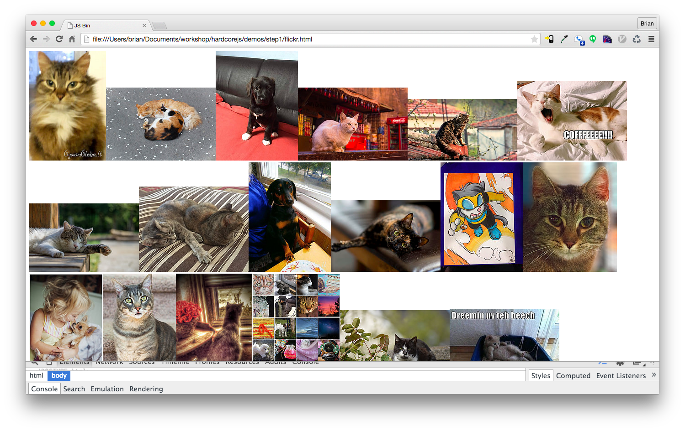

Chapter 06: Example Application
Declarative Coding
We are going to switch our mindset. From here on out, we'll stop telling the computer how to do its job and instead write a specification of what we'd like as a result. I'm sure you'll find it much less stressful than trying to micromanage everything all the time.
Declarative, as opposed to imperative, means that we will write expressions, as opposed to step by step instructions.
Think of SQL. There is no "first do this, then do that". There is one expression that specifies what we'd like from the database. We don't decide how to do the work, it does. When the database is upgraded and the SQL engine optimized, we don't have to change our query. This is because there are many ways to interpret our specification and achieve the same result.
For some folks, myself included, it's hard to grasp the concept of declarative coding at first so let's point out a few examples to get a feel for it.
// imperative
const makes = [];
for (let i = 0; i < cars.length; i += 1) {
makes.push(cars[i].make);
}
// declarative
const makes = cars.map(car => car.make);
The imperative loop must first instantiate the array. The interpreter must evaluate this statement before moving on. Then it directly iterates through the list of cars, manually increasing a counter and showing its bits and pieces to us in a vulgar display of explicit iteration.
The map version is one expression. It does not require any order of evaluation. There is much freedom here for how the map function iterates and how the returned array may be assembled. It specifies what, not how. Thus, it wears the shiny declarative sash.
In addition to being clearer and more concise, the map function may be optimized at will and our precious application code needn't change.
For those of you who are thinking "Yes, but it's much faster to do the imperative loop", I suggest you educate yourself on how the JIT optimizes your code. Here's a terrific video that may shed some light
Here is another example.
// imperative
const authenticate = (form) => {
const user = toUser(form);
return logIn(user);
};
// declarative
const authenticate = compose(logIn, toUser);
Though there's nothing necessarily wrong with the imperative version, there is still an encoded step-by-step evaluation baked in. The compose expression simply states a fact: Authentication is the composition of toUser and logIn. Again, this leaves wiggle room for support code changes and results in our application code being a high level specification.
In the example above, the order of evaluation is specified (toUser must be called before logIn), but there are many scenarios where the order is not important, and this is easily specified with declarative coding (more on this later).
Because we don't have to encode the order of evaluation, declarative coding lends itself to parallel computing. This coupled with pure functions is why FP is a good option for the parallel future - we don't really need to do anything special to achieve parallel/concurrent systems.
A Flickr of Functional Programming
We will now build an example application in a declarative, composable way. We'll still cheat and use side effects for now, but we'll keep them minimal and separate from our pure codebase. We are going to build a browser widget that sucks in flickr images and displays them. Let's start by scaffolding the app. Here's the html:
<!doctype html>
<html lang="en">
<head>
<meta charset="utf-8">
<title>Flickr App</title>
</head>
<body>
<main id="js-main" class="main"></main>
<script src="https://cdnjs.cloudflare.com/ajax/libs/require.js/2.2.0/require.min.js"></script>
<script src="main.js"></script>
</body>
</html>
And here's the main.js skeleton:
const CDN = s => `https://cdnjs.cloudflare.com/ajax/libs/${s}`;
const ramda = CDN('ramda/0.21.0/ramda.min');
const jquery = CDN('jquery/3.0.0-rc1/jquery.min');
requirejs.config({ paths: { ramda, jquery } });
requirejs(['jquery', 'ramda'], ($, { compose, curry, map, prop }) => {
// app goes here
});
We're pulling in ramda instead of lodash or some other utility library. It includes compose, curry, and more. I've used requirejs, which may seem like overkill, but we'll be using it throughout the book and consistency is key.
Now that that's out of the way, on to the spec. Our app will do 4 things.
- Construct a url for our particular search term
- Make the flickr api call
- Transform the resulting json into html images
- Place them on the screen
There are 2 impure actions mentioned above. Do you see them? Those bits about getting data from the flickr api and placing it on the screen. Let's define those first so we can quarantine them. Also, I'll add our nice trace function for easy debugging.
const Impure = {
getJSON: curry((callback, url) => $.getJSON(url, callback)),
setHtml: curry((sel, html) => $(sel).html(html)),
trace: curry((tag, x) => { console.log(tag, x); return x; }),
};
Here we've simply wrapped jQuery's methods to be curried and we've swapped the arguments to a more favorable position. I've namespaced them with Impure so we know these are dangerous functions. In a future example, we will make these two functions pure.
Next we must construct a url to pass to our Impure.getJSON function.
const host = 'api.flickr.com';
const path = '/services/feeds/photos_public.gne';
const query = t => `?tags=${t}&format=json&jsoncallback=?`;
const url = t => `https://${host}${path}${query(t)}`;
There are fancy and overly complex ways of writing url pointfree using monoids(we'll learn about these later) or combinators. We've chosen to stick with a readable version and assemble this string in the normal pointful fashion.
Let's write an app function that makes the call and places the contents on the screen.
const app = compose(Impure.getJSON(Impure.trace('response')), url);
app('cats');
This calls our url function, then passes the string to our getJSON function, which has been partially applied with trace. Loading the app will show the response from the api call in the console.

We'd like to construct images out of this json. It looks like the mediaUrls are buried in items then each media's m property.
Anyhow, to get at these nested properties we can use a nice universal getter function from ramda called prop. Here's a homegrown version so you can see what's happening:
const prop = curry((property, object) => object[property]);
It's quite dull actually. We just use [] syntax to access a property on whatever object. Let's use this to get at our mediaUrls.
const mediaUrl = compose(prop('m'), prop('media'));
const mediaUrls = compose(map(mediaUrl), prop('items'));
Once we gather the items, we must map over them to extract each media url. This results in a nice array of mediaUrls. Let's hook this up to our app and print them on the screen.
const render = compose(Impure.setHtml('#js-main'), mediaUrls);
const app = compose(Impure.getJSON(render), url);
All we've done is make a new composition that will call our mediaUrls and set the <main> html with them. We've replaced the trace call with render now that we have something to render besides raw json. This will crudely display our mediaUrls within the body.
Our final step is to turn these mediaUrls into bonafide images. In a bigger application, we'd use a template/dom library like Handlebars or React. For this application though, we only need an img tag so let's stick with jQuery.
const img = src => $('<img />', { src });
jQuery's html method will accept an array of tags. We only have to transform our mediaUrls into images and send them along to setHtml.
const images = compose(map(img), mediaUrls);
const render = compose(Impure.setHtml('#js-main'), images);
const app = compose(Impure.getJSON(render), url);
And we're done!

Here is the finished script:
const CDN = s => `https://cdnjs.cloudflare.com/ajax/libs/${s}`;
const ramda = CDN('ramda/0.21.0/ramda.min');
const jquery = CDN('jquery/3.0.0-rc1/jquery.min');
requirejs.config({ paths: { ramda, jquery } });
require(['jquery', 'ramda'], ($, { compose, curry, map, prop }) => {
// -- Utils ----------------------------------------------------------
const Impure = {
trace: curry((tag, x) => { console.log(tag, x); return x; }), // eslint-disable-line no-console
getJSON: curry((callback, url) => $.getJSON(url, callback)),
setHtml: curry((sel, html) => $(sel).html(html)),
};
// -- Pure -----------------------------------------------------------
const host = 'api.flickr.com';
const path = '/services/feeds/photos_public.gne';
const query = t => `?tags=${t}&format=json&jsoncallback=?`;
const url = t => `https://${host}${path}${query(t)}`;
const img = src => $('<img />', { src });
const mediaUrl = compose(prop('m'), prop('media'));
const mediaUrls = compose(map(mediaUrl), prop('items'));
const images = compose(map(img), mediaUrls);
// -- Impure ---------------------------------------------------------
const render = compose(Impure.setHtml('#js-main'), images);
const app = compose(Impure.getJSON(render), url);
app('cats');
});
Now look at that. A beautifully declarative specification of what things are, not how they come to be. We now view each line as an equation with properties that hold. We can use these properties to reason about our application and refactor.
A Principled Refactor
There is an optimization available - we map over each item to turn it into a media url, then we map again over those mediaUrls to turn them into img tags. There is a law regarding map and composition:
// map's composition law
compose(map(f), map(g)) === map(compose(f, g));
We can use this property to optimize our code. Let's have a principled refactor.
// original code
const mediaUrl = compose(prop('m'), prop('media'));
const mediaUrls = compose(map(mediaUrl), prop('items'));
const images = compose(map(img), mediaUrls);
Let's line up our maps. We can inline the call to mediaUrls in images thanks to equational reasoning and purity.
const mediaUrl = compose(prop('m'), prop('media'));
const images = compose(map(img), map(mediaUrl), prop('items'));
Now that we've lined up our maps we can apply the composition law.
/*
compose(map(f), map(g)) === map(compose(f, g));
compose(map(img), map(mediaUrl)) === map(compose(img, mediaUrl));
*/
const mediaUrl = compose(prop('m'), prop('media'));
const images = compose(map(compose(img, mediaUrl)), prop('items'));
Now the bugger will only loop once while turning each item into an img. Let's just make it a little more readable by extracting the function out.
const mediaUrl = compose(prop('m'), prop('media'));
const mediaToImg = compose(img, mediaUrl);
const images = compose(map(mediaToImg), prop('items'));
In Summary
We have seen how to put our new skills into use with a small, but real world app. We've used our mathematical framework to reason about and refactor our code. But what about error handling and code branching? How can we make the whole application pure instead of merely namespacing destructive functions? How can we make our app safer and more expressive? These are the questions we will tackle in part 2.